| |
|
PLATFORMLAR (TESVİYE YÜZEYLERİ)
|
|
Hesaplama Yöntemleri
Platform Çizgileri, Kenar Çizgisi ve Sınır Çizgileri Aralıklara Bölme Geometrinin Elde Edilmesi Platformlar. Platformların İnteraktif Olarak Değiştirilmesi Yarma ve Dolgu Otomatik Dengelemesi Platformları Kaydetme ve Yükleme Genel Bilgiler Bu araç, kotlu kapalı çizgilerle ve iki vektörle (biri yarma, diğeri dolgu için) tanımlanan bir dizi platformun yarma ve dolgularının eş zamanlı olarak oluşturulması için tasarlanmıştır. 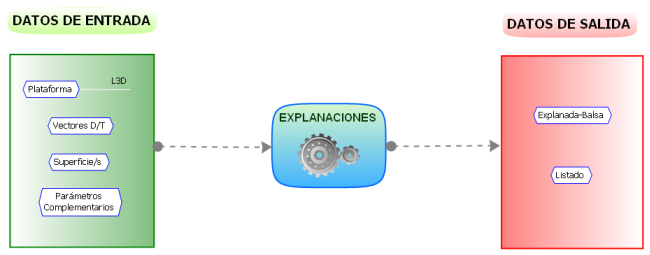
[Platformlar] butonuna tıklandığında aşağıdaki iletişim kutusu belirir:  Bu iletişim kutusu, aşağıda göreceğimiz sekmeli modu (YÜZEYLER, ÇİZGİLER, PLATFORMLAR, TİP KESİTLER, ÜSTYAPI, KAYA, SEÇENEKLER, METRAJLAR, GRUPLAR) kullanır.
Platformlar menüsünün tüm yapılandırmasının kaydedildiği bir .exp dosyasını Kaydedebilir veya Yükleyebiliriz. Varsayılan olarak bir ISMOS.exp dosyası oluşturulur. Bir platform oluşturulduğunda, .exp dosyasının adı çizilen elemanların kaynağı olarak ilişkilendirilir. Aynı şekilde, veriler değiştirilmişse uyarılır ve .exp dosyasını kaydetme imkanı sunulur. Bu menü aracılığıyla oluşturulmuş çizgiler içeren bir edm/edb dosyası yüklendiğinde, bir çizgi seçilip sağ tuşla özellikler kutusu açılırsa, oluşturulduğu .exp dosyasının adıyla bir kaynak tuşu belirir. Bu tuşa basılırsa, .exp dosyası yüklenmiş olarak doğrudan Platformlar iletişim kutusuna geçilir. O zaman Öncekileri Sil'e basarak, bir parametreyi değiştirerek ve tekrar Oluştur'a basarak platform değiştirilebilir. 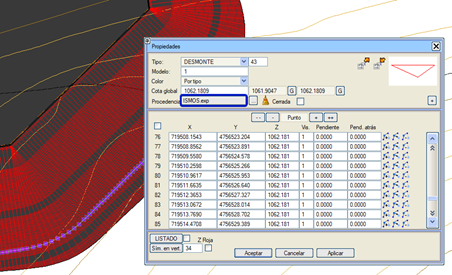
Platform Geometrisinin Oluşturulması Öncelikle, programa arazinin hangi yüzeyi temsil ettiğini belirtmek gerekir; bu parametre, iletişim kutusunun üst kısmındaki Arazi alanında ayarlanır. Gölet Tabanı: PLATFORM sekmesinde belirlediğimiz takdirde (Dış şev, iç şev veya her ikisi), iç şevlerin kesişeceği yüzey olacaktır. Platform: Platform tek bir düzlemde yer almıyorsa, yüzeyi bir Harita Yüzeyi aracılığıyla tanımlanır. Kontur çizgisini içermesi gerekmez ve ondan daha büyük olabilir. Uygulanması için, yüzey olarak tanımlanmasının yanı sıra, Platform yüzeyini dahil et seçeneğinin de aktif olması gerekir. Sağlam Zemin: Bu yüzey, metrajlar sekmesinde verilen Bitkisel Toprak kalınlığının yerini alır. KAYA. Tanımlanırsa, bu yüzey Kaya sekmesindeki ilk kayanın derinliğinin yerini alır. (Profil için tipi buradan alır). (Profillere göre platformlarda bu kayadaki yarma, eğer topraktan farklıysa kaya için Tip Kesit geometrisiyle oluşturulacaktır.) 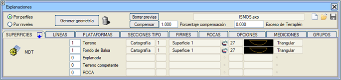
Her platform tarafından oluşturulan yarma ve dolgular vektörel olarak verilir ve yarma ile dolguya bağlı çizim çizgileri, kullanıcının belirleyeceği tipte olacaktır (varsayılan olarak, yarma için L43 ve dolgu için L82). 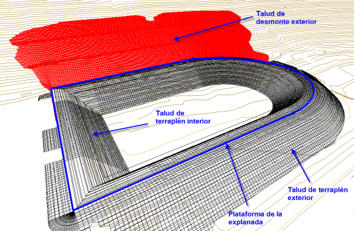
TİP KESİTLER butonuna tıklandığında, ISTRAM®/ISPOL®'deki ortak vektörel tasarım menüsü görünecektir. 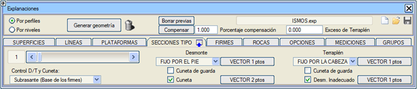
Eğer yarma veya dolgu vektörü tek bir veri ile tanımlanırsa, platform oluşturulurken otomatik olarak ayrıklaştırılır. Örn. (200, -100) -> (2, -1), (2, -1), (2, -1)..... Eğer seçenekler sekmesinde Sağlam Zemine Kadar Dolgu veya Sağlam Zemine Kadar Yarma'yı etkinleştirmişsek, o zaman Tip Kesitler'de Uygun Olmayan Arazide Yarma için bir vektör kullanımını etkinleştirmemize izin verir.
Hesaplama Yöntemleri Kullanıcı ayrıca platformun hesaplama yöntemini de seçmelidir; iki olasılık vardır:
Vektörlerin her köşe noktası için bir seviye (tabaka) oluşturarak çalışır, bu nedenle bunların veri açısından yoğun olması tavsiye edilir, örneğin bu araçta kullanılan varsayılan vektörler gibi.
En hızlı yöntemdir ve örneğin, ilk denemeler için tavsiye edilir. Seviyelere göre platformlar, aşağıda göreceğimiz gibi, profillere göre yöntem gibi, SAM yüzeylerini de kullanır. Yani arazi, bir harita yüzeyi, bir SAM, bir Lazer veritabanı veya bir Grid SAM olabilir.
Profillere göre platformlar, SAM yüzeylerini kullanır. Yani arazi, bir harita yüzeyi, bir SAM, bir Lazer veritabanı veya bir Grid SAM olabilir.
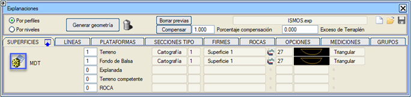 Ayrıca, toprak işlerinin ulaşım sınırları için bir çizgi tipi de seçilebilir. Aynı şekilde, bu yöntemde, farklı bölgeler tanımlanabilir ve KM'lere göre farklı tip kesitler uygulanabilir.
Profillere göre hesaplanan platformlar için, yarma ve dolgu geometrilerini tanımlayan vektörler, etek'ten veya baş'tan (seviyelere göre yöntemde mevcut değildir) yakalanarak yerleştirilebilir.
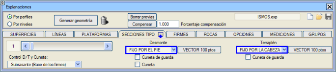 TİP KESİT alanında, platformlara farklı bölgelerde uygulanabilecek ve böylece birden fazla geometri elde edilebilecek mevcut yarma ve dolgu vektörlerinin (tip kesitler) sayısı belirtilir. Seçilebilecek iki tür yarma/dolgu kontrolü ve hendek yakalaması vardır: Alttemel (üstyapı katmanlarının tabanına göre) veya Platform Kenarı. Her ikisi de üstyapı katmanları olmadığında aynı etkiye sahiptir. Profillere göre platformlar için, her yarma ve/veya dolgu kesitine, arazide kesişmek için yeterli yüksekliğe sahip bir son segment tanımlanması gereken, vektörel olarak tanımlanmış kafa hendekleri ekleme imkanımız vardır. 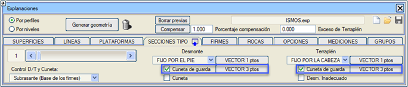 Ayrıca, her tip kesite, kaya veya toprakta başlanıp başlanmadığına bakılmaksızın, yarma kesitlerinde üstyapı katmanlarından sonra yerleştirilecek bir hendek ekleme imkanı da vardır. 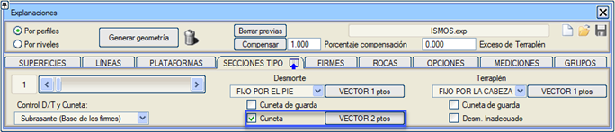 Bu yöntem seçildiğinde, SEÇENEKLER sekmesinde profiller aracılığıyla platform oluşturmak için çeşitli kutucuklar da etkinleştirilir: 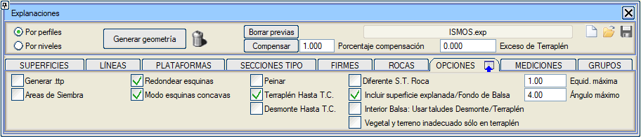
Çizgiler ÇİZGİLER'e karşılık gelen bölümde, Platformun Tepe Noktası'na atanan çizgi tipi bildirilmelidir. O tipteki her çizgi, bir platformun hesaplanması için dikkate alınır, böylece aynı anda çok sayıda platform hesaplanabilir. 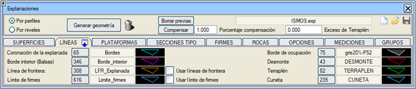
İç Kenar (Göletler) olarak adlandırılan iç şevlerin tabanı için farklı bir çizgi tipi tanımlanabilir. Program, bu çizginin tamamen platform kenar çizgisinin içinde olmasını arar. Dış şevler kenar çizgisinden ve iç şevler iç kenar çizgisinden oluşturulur. Bir Platform/Gölet için birden fazla iç kenar çizgisine izin verilir. Örneğin, "sekiz" şeklinde bir platform durumunda. 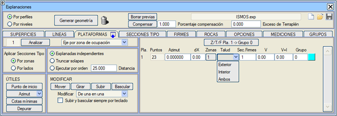
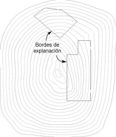
Bildirilen İşgal Sınırı tipi, programın platformun kenarını (dolgu eteği ve yarma başı) çizmek için kullanacağı tip olacaktır. Varsayılan olarak, şeffaf gri bir dolguya sahip bir çizgi olan L75 tipi kullanılır. Program, yarma başını ve dolgu eteğini ayırt etmek için işgal sınırı çizgisini gözden geçirir. Sınır çizgileri kutucuğu etkinleştirilerek, platformların yarma veya dolgu şevlerini tanımlanan çizgi tipinden itibaren kesebiliriz. Eğer kesim üstyapı katmanları bölgesinde gerçekleşirse, üstyapının yan şevi azaltılır ancak kalınlık korunur. Sınır çizgisi platformu etkilemez, öyle ki bir bölgede tüm şev kaldırılmak isteniyorsa, sınır çizgisi platform çizgisiyle çakışacak şekilde getirilmelidir. Eğer sınır çizgisi platformun içine geçerse, artık şevleri etkilemez. Üstyapı Sınırı: Platformun üstyapı uzantısını sınırlamak için bir çizgi tipi seçilebilir, en fazla 2 sınır çizgisi olabilir. Bu seçenek etkinleştirilirse ve platformun kenarının içinde bu çizgi varsa, üstyapı katmanları sadece bu kapalı alan içinde oluşturulur ve her üstyapı bileşeninin sahip olduğu şevle biter. Sınır çizgisinin kenarla çakışması durumunda, tanınması için içeriye doğru kaydırılması gerekir. 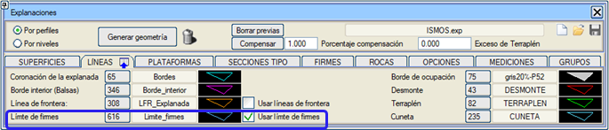 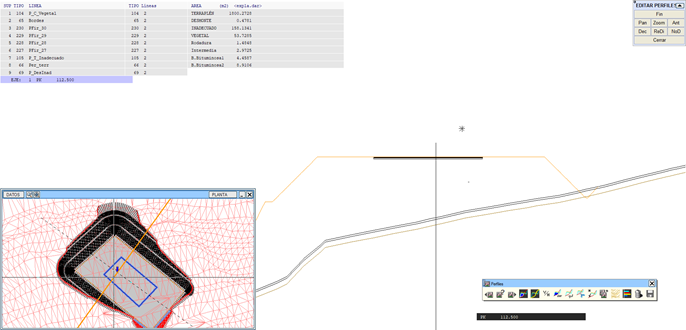 Öncekileri Sil komutuyla, mevcut oturumda oluşturulmamış ve bir .edm veya .edb dosyasında gelmiş olsalar bile, bir platformdan gelen tüm öğeleri siler. 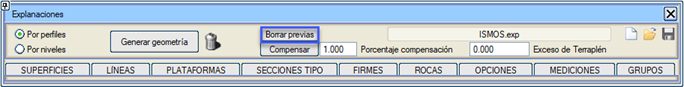
Aralıklara Bölme Bölgeler seçeneğine tıklandığında, çizgiyi KM'lere göre aralıklara bölmeyi ve tanımlanmış olan farklı tip kesitleri uygulamayı sağlayan bir pencere açılır. 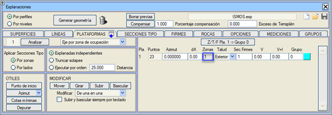
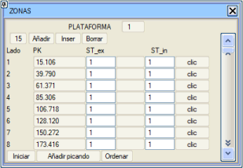
Bu araç, hesaplama yöntemi profillere göre olduğunda, platformun çevresinde farklı şev geometrileri ve hatta aralarında geçişler uygulamayı sağlar. Konturu aralıklara bölerken iki olasılık vardır:
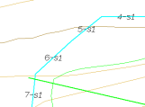
Geometrinin Elde Edilmesi PLATFORM'un yanında, platform çizgisinin tanımını iyileştirmek için bir YARDIMCI PROGRAMLAR menüsü bulunur. Özellikle, Başlangıç Noktası aracı, platform çizgisinin başlangıç noktasını, platformun doğru hesaplanması için en uygun olan en uzun düz segmentin orta noktasına taşır. 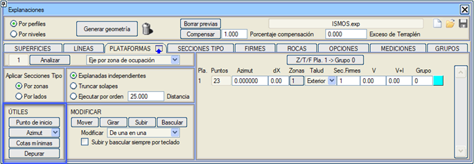
Azimut yardımcı programının üç seçeneği vardır:
Temizle seçeneği, platform kenar çizgilerini analiz ederek bu çizgilerdeki olası döngüleri bulur ve ortadan kaldırır. Temizlenmiş çizgilerle edm'yi kaydetmek tavsiye edilir. [Geometri Oluştur] butonu (ilgili geri alma işlemi [Geri Al] ile), bu kenarlardan, seçilen çizgi tipi kapalı alanları ve vektörel olarak tanımlanan şeve göre oluşturulan yarma ve dolguyu oluşturur: 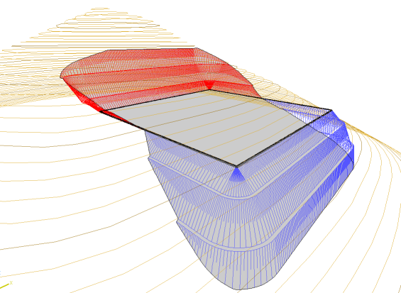
Model aşağıdaki çizgilerle oluşturulur:
Platformlar. Platformların İnteraktif Olarak Değiştirilmesi Açılır pencerenin sağ tarafında, aşağıdaki kolaylıkları sağlayan PLATFORMLAR seçeneği bulunur:
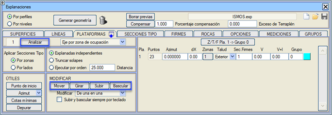
Grup: Her platforma bir grup atanabilir ve onları ayırt etmek için her gruba farklı bir renk verilebilir. Tek bir platform ve zaten oluşturulmuş şevler durumunda, yükseltme ve eğim verme seçenekleri interaktif modda, daha iyi bir kontrol sağlamak için veriyi klavyeden girmeye zorlanabilir. Bu, Klavyeden seçeneği etkinleştirilerek sağlanır.
Yarma ve Dolgu Otomatik Dengelemesi [Dengele] butonu, yarma ve dolgu hacimleri arasındaki fark belirtilen dengeleme yüzdesinin altına düşene kadar tüm platformların kotunu birer birer deneyerek yükseltir veya alçaltır. [Dolgu Fazlası] butonu, dolgu ile yarma arasındaki farkın bu değere yaklaşması için platformun yüksekliğini aramayı sağlar. 0'dan farklı bir değer atanması durumunda, yüzde bu değer üzerinden hesaplanır. 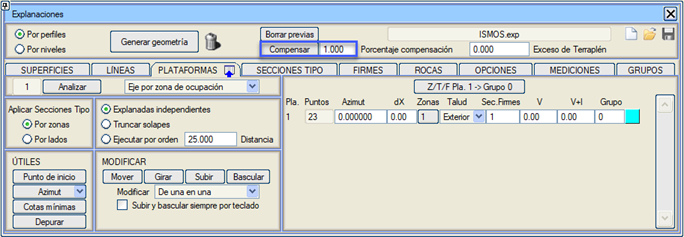
Platformları Kaydetme ve Yükleme 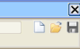 Ekranın üst kısmında, tüm platform verilerini .exp uzantılı dosyalar aracılığıyla yönetmeyi sağlayan [Kaydet]  ve [Yükle] ve [Yükle]  tuşları bulunur. tuşları bulunur.Yüklemek için, bölgelerin doğru bir şekilde atanması için kaydın yapıldığı aynı harita ve platformların mevcut olması tavsiye edilir. Metrajların Alınması Hacim hesaplamalarında yer alan parametreler METRAJLAR bölümünde toplanmıştır. Burada, hacim hesaplaması için profiller arası bir aralık ve bunlara uygulanacak bir yarı bant genişliği ile profil ve metraj hesaplamasında bir sıyırma kazısını dikkate alma imkanı belirlenir. Bu sıyırma kazısını hesaplamak için Bitkisel Toprak Kalınlığı alanı doldurulmalı ve uygun olmayan toprağı hesaplamak için B+U alanı doldurulmalıdır; tek bir bitkisel ve/veya uygun olmayan toprak değeri yapılandırılabilir ve Aktif Platformlara Kopyala komutuyla tüm aktif platformlara kopyalanabilir. Eğer Yüzeyler sekmesinde sağlam zemin için bir SAM yüzeyi tanımlamışsak, bu, Platformlar sekmesindeki bir bitkisel toprak kalınlığı B ile şu şekilde birleştirilebilir:
Göletler için bir dolum payı belirtilebilir, böylece göletin kapasitesi taşana kadar değil, o sınırdan belirli bir yükseklik altına kadar ölçülür. 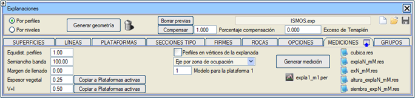
Platformun köşe noktalarında profiller seçeneği, aralığa göre profillere ek olarak, programın platformun çizgisinin veya konturunun köşe noktalarından geçen profilleri de almasına neden olur, böylece daha hassas hacim hesaplamaları elde edilir. Platform için model: İlk platform için 1900 değerine kadar bir model numarası tanımlanabilir. Bundan sonra geri kalanı sırayla numaralandırılır. Program, her platform için expla#.per adında (burada # eksen numarasıdır) bir profil dosyası oluşturacaktır. Profiller, varsayılan olarak azimutu 0 olan düz bir eksene göre oluşturulacaktır. Her platformun eksen yönü, PLATFORMLAR bölümündeki Azimut alanı aracılığıyla değiştirilebilir. 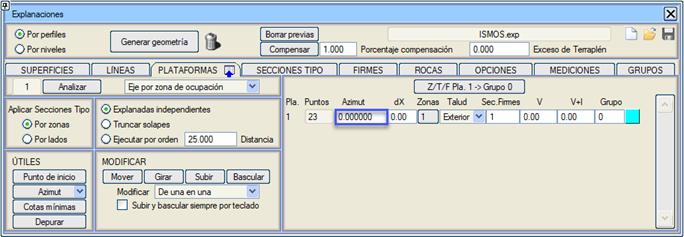
dX sütunundan her platformun eksenini yanal olarak kaydırabiliriz. Metraj oluşturulduğunda, kullanıcının referansını alabilmesi için profilleri oluştururken kullanılan ekseni takip eden bir L53 tipi çizgi oluşturulur. Ayrıca, GÜZERGAH PROJESİ modülünden faydalı olabileceği düşünülerek, metraj profilleri için kullanılan eksenleri içeren expla.cej dosyası da oluşturulur. Dikkate alınacak eksen şunlar olabilir:
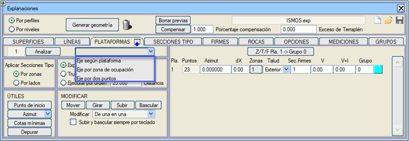
Bu bölümdeki [Oluştur] butonuna basıldığında, kullanıcı arazi yüzeyinin model 0'da olduğundan emin olmalıdır, çünkü program her platformu, kullanıcı tarafından tanımlanan profil aralığı ve yarı bant genişliğine göre bir Güney-Kuzey eksenine göre profillerle tarar ve yüzey sayısını otomatik olarak artırır, mevcut olanlara saygı duyar ve platform, yarma ve dolgu için tanımlanan tiplerle başka bir tane oluşturur. Metraj oluşturulduktan sonra, program haritanın bazı öğelerinin modelini değiştirir ve sadece arazi yüzeyine ait olan nesneleri 0'da bırakır. [Modeli Geri Yükle] seçeneği ile, metraj oluşturulduktan sonra bu öğelerin modeli geri yüklenir. 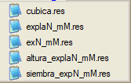Metraj oluşturulduğunda, her platforma atanan numarayla bir sembol ve ayrıca her platformun yarma ve dolgu hacimlerini içeren ve hepsini toplayan cubica.res listesi de oluşturulur. Her platformun alanı da (işgal sınırı için tanımlanan çizginin kapladığı plan alanı) dahil edilir. Ölçüm, [cubica.res Listesi] butonuna basıldığında gösterilir. cubica.res listesinde platformun kotunu veya değişken kotu varsa ortalama kotunu buluruz.
===================================================
* * * PLATFORM METRAJLARI * * * =================================================== PLATFORM ---KISMİ HACİMLER---------------- --TOPLAM HACİMLER---------------- NO --DOLGU-- --YARMA-- --KAPASİTE-- --DOLGU-- --YARMA-- --KAPASİTE-- 1 16.00 57678.74 0.0 16.0 57678.7 0.0 2 26949.91 10671.98 0.0 26965.9 68350.7 0.0 Ayrıca, her platform için explaN_mM.res ve exN_mM.res dosyaları oluşturulur (N platform numarası ve M model numarasıdır) ve bunlar, elde edilen explaN_mM.per dosyasına göre KM'lere göre metraj listelerine karşılık gelir; ikisi arasındaki fark, ikincisinin doğrudan bir hesap tablosuna yüklenebilecek bir formata sahip olmasıdır. [explaN_mM.res] butonuna basıldığında, her platformun explaN_mM.res listelerine erişilir. SIYIRMA KAZISI metrajı, Bitkisel Toprak ve UYGUN OLMAYAN Zemin olarak ikiye ayrılır. Geometriyi oluşturduğumuzda, [altura_explaN_mM.res] adlı bir liste de oluşturulur; bu liste, maksimum yarma ve dolgu yüksekliklerini içerir (N platform numarası ve M model numarasıdır). 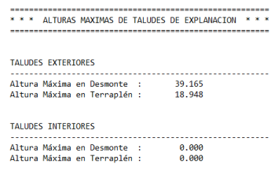
Ayrıca, kullanıcının ölçümleri kontrol etmesini sağlayan expla.dar adında bir hacim tablosu da otomatik olarak oluşturulur. expla.dar tablosu, metrajların ve BIM için malzemelerin kapalı alanlarını çizmek için çizgi tipleriyle oluşturulur. Kütüphaneye, platformun enkesitlerini metrajların katı kapalı alanlarıyla (üstyapı katmanları, dolgu vb.) çizmeyi sağlayan Expla.gut dosyası eklenir. Platformların metrajı oluşturulduğunda, platform eksenlerinin .cej dosyasının adıyla bir expla.pol dosyası oluşturulur ve metrajda oluşturulan profilleri arazi profilleri olarak atar. Ayrıca, her platform için eksenden çıkarılan bir profili içeren bir .vol dosyası da eklenir. Bununla, güzergah projeleri modülünde platformun bir boyuna profilini çizebiliriz (Boykesitte hesaplama yapmaya gerek yoktur). Platformlarda metraj yürütülürken oluşturulan expla.pol projesi Güzergah Projesi'ne yüklendiğinde, Proje Oluştur seçeneği işaretlenerek metraj profillerinden bir BIM modeli elde edilebilir. 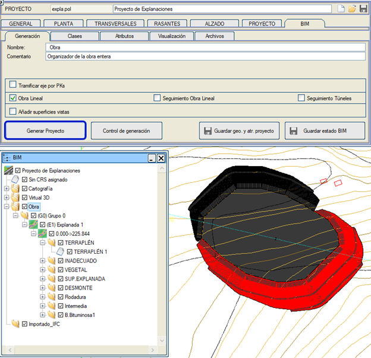
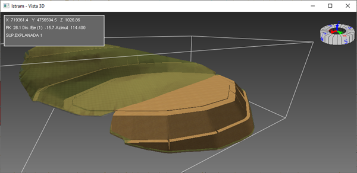
Gölet ve Depo Alanı Tasarımı Göletlerin oluşturulması için aynı anda iki yüzeyle çalışma imkanı vardır. Bu tür geometrilerde, dış şevlerin kesimi için bir yüzey ve iç şevler için başka bir yüzey (göletin tabanı) tanımlanır. Depo alanları durumunda, sadece iç şevler kullanılacak ve depo alanının tepe kotuna sahip olacak iç yüzeyle kesişim aranacaktır. Üstyapı Katmanları Platform yüzeyine paralel olarak, her katmanın kalınlığını, bir ad, yan şevi ve profiller için bir yüzey tipi vererek, 30'a kadar farklı üstyapı katmanı tanımlamak mümkündür. Her üstyapı katmanı ayrı ayrı ölçülür. Dış ve iç şevli gölet tipi platformlar için üstyapı katmanları tanımlanmasına izin verilir. 30'a kadar farklı üstyapı kesiti tanımlanabilir. Adlar ve yüzeyler tüm kesitler için aynıdır. Her kesitte kullanılan katmanlar, kalınlıkları ve şevleri değişir. PLATFORMLAR sekmesinde (Üstyapı Kes.) her birine hangi üstyapı kesitinin uygulanacağı tanımlanır. 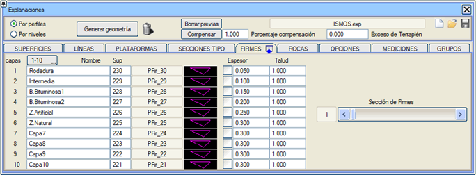
Platform için bir iç yüzey tanımlandığında ve bu yüzeyin üstyapı katmanları olduğunda, ölçüm profillerinde platformunkine paralel üstyapı katmanlarının yüzeylerini elde etmek için bu yüzey her katmanın derinliğine kopyalanır. Kaya Katmanları Metraj oluşturulduğunda profillere eklenen 6'ya kadar Kaya horizonu eklenebilir.  Gruplar Gruplara göre etkinleştirmeyi veya devre dışı bırakmayı ve renklerini ve adlarını değiştirmeyi sağlar. Pasif gruplardaki platformlar soluk çizilir ve geometrileri oluşturulmaz veya metrajları yapılmaz. Grupların etkinleştirme durumu, .exp dosyasında da kaydedilir. Her platforma bir ad atanabilir. Bu ad ekranda gösterilir ve eksen için de ad olarak geçer. 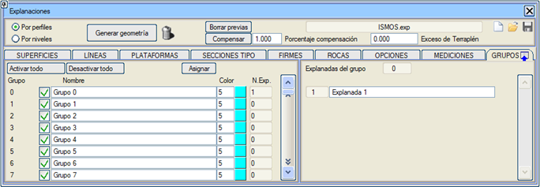
Ata: Bu araç, grup dizisinin tekrarlandığı platform bloklarına grubu tek seferde atamayı sağlar. |